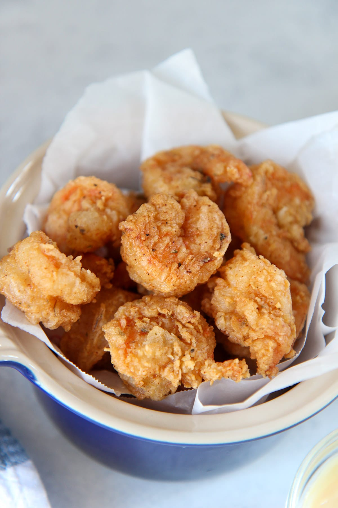

FRIED SHRIMP
How to Make Fried Shrimp
Here's what you'll need to make the best fried shrimp of your life:

Fried Shrimp Ingredients
The Allrecipes community adores this lasagna recipe because it's incredibly customizable, so you can easily alter the ingredient list to suit your needs. If you want to stay true to the original recipe, though, these are the ingredients you'll need to add to your grocery list:
- Flour: Dredging your shrimp in all-purpose flour before frying promotes a wonderfully crunchy crust
- Seasonings: This fried shrimp is simply seasoned with salt and pepper.
- Eggs: Dipping the floured shrimp in eggs gives the bread crumbs something to adhere to.
- Bread crumbs: Panko bread crumbs add the perfect amount of flavor and crunch.
- Shrimp: You'll need one pound of peeled, deveined jumbo shrimp.
- Oil: Vegetable oil is great for frying, as it has a neutral flavor and can stand up to high heat.
You'll find the full, step-by-step recipe below — but here's a brief overview of what you can expect when you make this fried shrimp:
Set up your workspace:
Mix the flour and seasonings in one bowl. Beat the eggs until frothy in a second bowl. Place the bread crumbs in a third bowl.Dredge, dip, and coat:
Dredge the shrimp in the flour mixture, then dip it into the eggs. Finally, press the shrimp in the crumbs. Turn to coat.Fry the shrimp:
Heat oil in a heavy pot to 350 degrees F. Deep fry the shrimp in batches until cooked through. Transfer to paper towels to drain.
How to Layer Lasagna
Fried in oil heated to 350 degrees F, individual shrimp should be perfectly fried after about one minute. You can tell the shrimp is done when it reaches a gorgeous golden brown color and the tail curls without being constricted.
index